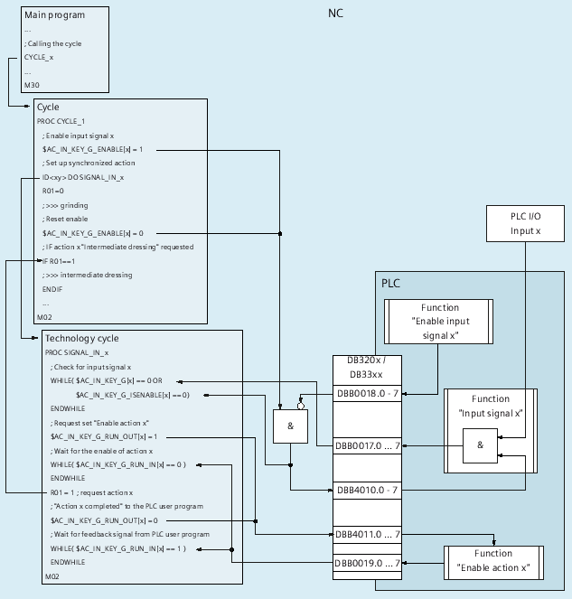

When grinding, input signals asynchronous with the machine operation must be identified and the appropriate actions must be integrated in the program sequence. The following system variables and NC/PLC interface signals are available:
System variable | NC/PLC interface DB21, ... | Description |
|---|---|---|
NC-internal communication | ||
$AC_IN_KEY_G_ENABLE[1 ... 8] 1 | --- | Input signal enable on the NC side |
Communication NC → PLC 2) | ||
$AC_IN_KEY_G_ISENABLE[1 ... 8] 1) | <Chan>.grinding.in.signalEnabled | Input signal enable |
$AC_IN_KEY_G_RUN_OUT[1 ... 8] | <Chan>.grinding.in.requested | Enable request for the action on the NC side (optional) |
Communication PLC → NC 3) | ||
$AC_IN_KEY_G[1 ... 8] | <Chan>.grinding.out.set | Input signal |
--- | <Chan>.grinding.out.disableSignal 1) | Input signal inhibit on the PLC side |
$AC_IN_KEY_G_RUN_IN[1 ... 8] | <Chan>.grinding.out.ackFuncExecution | Enable request for the action on the PLC side (optional) |
1) As a result of the AND logic operation of the NC enable signal on the NC side in $AC_IN_KEY_G_ENABLE and PLC enable signal NOT( 2) The content of the system variable is transferred in the NC/PLC interface 3) The content of the NC/PLC interface is transferred in the system variable | ||
The main program starts a cycle (ZYKLUS_1), in which grinding is executed as well as the intermediate dressing.
An operator can request an "intermediate dressing" action asynchronous to the machining operation itself using an input signal of the PLC I/O.
Identifying the input signal and requesting the action is realized in a technology cycle. Technology cycle ("SIGNAL_IN_x") is called in the action part of the synchronized action (ID <xy>) set up in the cycle.
The call schematic, the relevant commands and the signal flow are shown in the following diagram.
① | <Chan>.grinding.out.disableSignal |
② | <Chan>.grinding.out.set |
③ | <Chan>.grinding.in.signalEnabled |
④ | <Chan>.grinding.in.requested |
⑤ | <Chan>.grinding.out.ackFuncExecution |
The PLC user program must provide the functions on the PLC side, for example "enable input signal x".
Main program
Call cycle "ZYKLUS_1"
Cycle "ZYKLUS_1"
Set the enable for input signal x ($AC_IN_KEY_G_ENABLE)
Set up the synchronized action with technology cycle "SIGNAL_IN_x"
Initialize the trigger for action x "intermediate dressing" (R01)
Grind the component
Technology cycle "SIGNAL_IN_x" (in parallel with the cycle)
Identify the input signal ($AC_IN_KEY_G) with the enable active ($AC_IN_KEY_G_ISENABLE)
Request the enable of action x from the PLC ($AC_IN_KEY_G_RUN_OUT)
Wait for the enable of action x from the PLC ($AC_IN_KEY_G_RUN_IN)
Request action x in cycle (R01)
Feedback signal of the request to the PLC ($AC_IN_KEY_G_RUN_OUT)
Wait for acknowledgment from the PLC ($AC_IN_KEY_G_RUN_IN)
Cycle "ZYKLUS_1" (after completing grinding)
Reset the enable for input signal x ($AC_IN_KEY_G_ENABLE)
If action x is requested ⇒ execute intermediate dressing
... (possibly re-execute grinding/intermediate dressing operations etc.)
PLC user program
Function "Enable input signal x":
Setting the interface signal <Chan>.grinding.out.disableSignal
Function "Enable input signal x":
Linking (AND) of the input signal from the PLC I/O with the enable of input signal (<Chan>.grinding.in.signalEnabled) and setting the result in the interface (<Chan>.grinding.out.set)
Function "Enable action x":
Checking/setting the interface signals <Chan>.grinding.in.requested / <Chan>.grinding.out.ackFuncExecution
Basic Program Plus | Basic Program | |
|---|---|---|
<Chan>.grinding.in.signalEnabled | LBP_Chan*.E_InKeyGIsEn1-8 | DB21, ... .DBX390.0..7 |
<Chan>.grinding.in.requested | LBP_AxisX*.E_InKeyGRunOut1-8 | DB21, ... .DBX391.0..7 |
<Chan>.grinding.out.set | LBP_Chan*.A_InKeyG<n> | DB21, ... .DBX385.0..7 |
<Chan>.grinding.out.disableSignal | LBP_Chan*.A_InKeyGEn<n> | DB21, ... .DBX386.0..7 |
<Chan>.grinding.out.ackFuncExecution | LBP_Chan*.A_InKeyGRunIn<n> | DB21, ... .DBX387.0..7 |